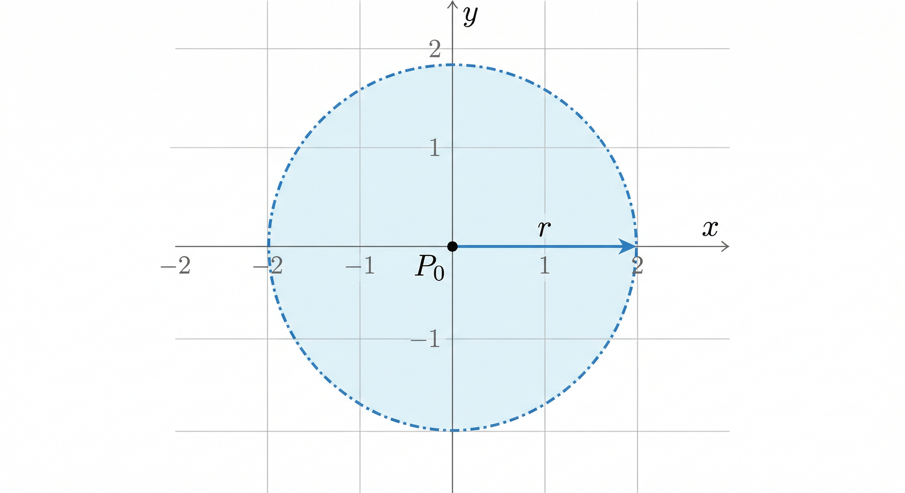
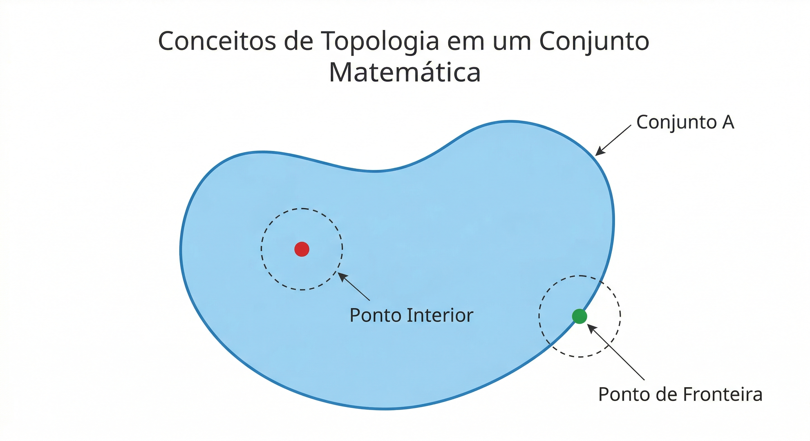
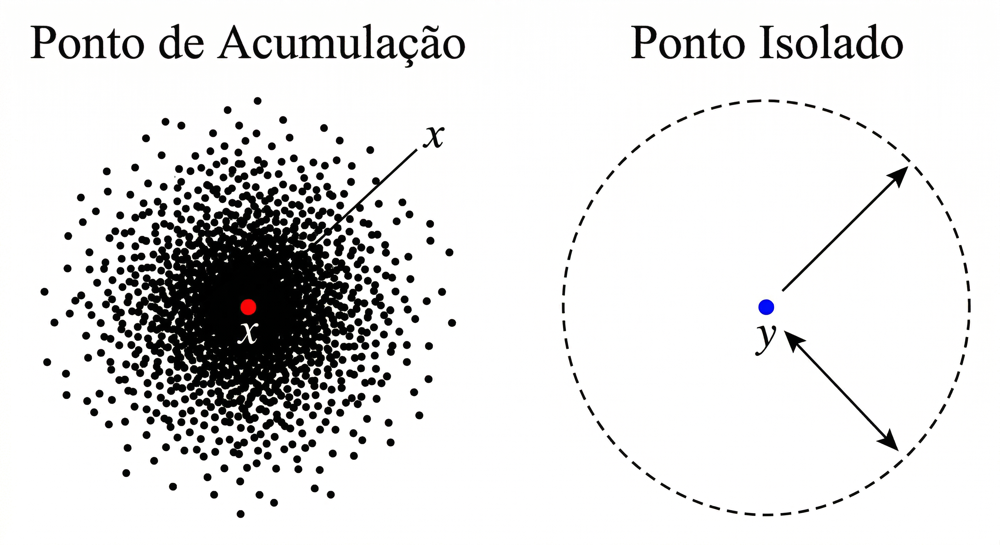

Seção 2.3 Topologia do \(\mathbb{R}^2\) para Limites
Para entendermos os limites de funções de várias variáveis (como \(z = f(x,y)\)), precisamos primeiro entender o "chão" onde estamos pisando: o plano \(\mathbb{R}^2\text{.}\) Na reta real (\(\mathbb{R}\)), só podemos nos aproximar de um ponto pela esquerda ou pela direita. No plano, podemos nos aproximar a partir de infinitas direções e por infinitos caminhos (retas, parábolas, espirais). Para controlar essa complexidade e garantir que uma aproximação seja válida, a Matemática utiliza a Topologia.
Subseção 2.3.1 A Métrica do Plano: Distância Euclidiana
Antes de definirmos qualquer região geométrica, precisamos saber como medir distâncias de forma rigorosa. Dados dois pontos no plano, \(P_1(x_1, y_1)\) e \(P_2(x_2, y_2)\text{,}\) a distância euclidiana entre eles, denotada por \(d(P_1, P_2)\text{,}\) é dada pela aplicação direta do Teorema de Pitágoras:
\begin{equation*}
d(P_1, P_2) = \sqrt{(x_2 - x_1)^2 + (y_2 - y_1)^2}
\end{equation*}
Toda a teoria formal de limites em várias variáveis baseia-se em controlar o quão pequena essa distância pode ficar. Dizer que um ponto "tende" a outro significa, na prática, que a distância entre eles tende a zero.
Subseção 2.3.2 A Bola Aberta (Vizinhança)
Na reta real, a vizinhança de um ponto é definida por um intervalo aberto \((a, b)\text{.}\) No plano bidimensional, a vizinhança natural de um ponto é a bola aberta (também chamada de disco aberto).
Definição Formal: Dado um ponto \(P_0(x_0, y_0) \in \mathbb{R}^2\) e um número real \(r > 0\) (o raio), a bola aberta de centro \(P_0\) e raio \(r\text{,}\) denotada por \(B(P_0, r)\text{,}\) é o conjunto de todos os pontos do plano cuja distância até \(P_0\) é estritamente menor que \(r\text{:}\)
\begin{equation*}
B(P_0, r) = \{ P(x,y) \in \mathbb{R}^2 \mid d(P, P_0) < r \}
\end{equation*}

Atenção ao termo "Aberta": A desigualdade utilizada na definição é estrita (\(<\)). Isso significa matematicamente que a "casca" ou a borda da bola (onde a distância é exatamente igual a \(r\)) não pertence ao conjunto. Graficamente, é uma convenção universal representar essa borda com uma linha tracejada.
Subseção 2.3.3 Ponto Interior e Conjunto Aberto
Tendo a bola aberta como nossa "ferramenta de medida", podemos agora classificar os pontos e as regiões do plano.
Ponto Interior: Um ponto \(P\) é um ponto interior de um conjunto \(A\) se for possível desenhar uma bola aberta centrada em \(P\text{,}\) por menor que seja o seu raio \(r\text{,}\) que esteja totalmente contida dentro de \(A\text{.}\) Em termos intuitivos, se você está em um ponto interior, você consegue dar um pequeno passo em qualquer direção imaginável sem sair do conjunto.
Ponto de Fronteira: Um ponto \(Q\) é de fronteira se qualquer bola aberta centrada nele, por menor que seja, contiver simultaneamente pontos que pertencem ao conjunto e pontos que não pertencem ao conjunto.
Conjunto Aberto: Um conjunto \(A\) é considerado um conjunto aberto se, e somente se, absolutamente todos os seus pontos forem pontos interiores.

Subseção 2.3.4 Ponto de Acumulação (O Coração do Limite)
Para calcularmos o limite de uma função \(f(x,y)\) quando \((x,y)\) tende a um ponto \(P_0\text{,}\) precisamos garantir de forma absoluta que podemos nos aproximar de \(P_0\) usando pontos válidos do domínio da função. É aqui que entra o conceito topológico mais crítico para o cálculo: o ponto de acumulação.
Definição Rigorosa: Um ponto \(P_0 \in \mathbb{R}^2\) é um ponto de acumulação de um conjunto \(A\) se toda bola aberta \(B(P_0, r)\text{,}\) para qualquer \(r > 0\text{,}\) contiver pelo menos um ponto de \(A\) que seja diferente do próprio \(P_0\text{.}\)
De forma geométrica, isso significa que ao redor de \(P_0\text{,}\) não importa o quão perto você olhe (ou quão microscópica seja a bola que você desenhe), sempre haverá "poeira" (pontos) do conjunto \(A\text{.}\) Note que o próprio ponto \(P_0\) não precisa pertencer ao conjunto \(A\text{;}\) a única exigência é que ele esteja "aglomerando" pontos de \(A\) ao seu redor de forma infinita.

Por que isso importa? Se um ponto for isolado (como mostrado na figura acima), não há caminho contínuo para nos aproximarmos dele a partir do conjunto. Portanto, a definição formal de limite de \(f(x,y)\) quando \(P \to P_0\) exige obrigatoriamente que \(P_0\) seja um ponto de acumulação do domínio. Apenas assim a expressão "quando nos aproximamos" faz sentido matemático rigoroso.